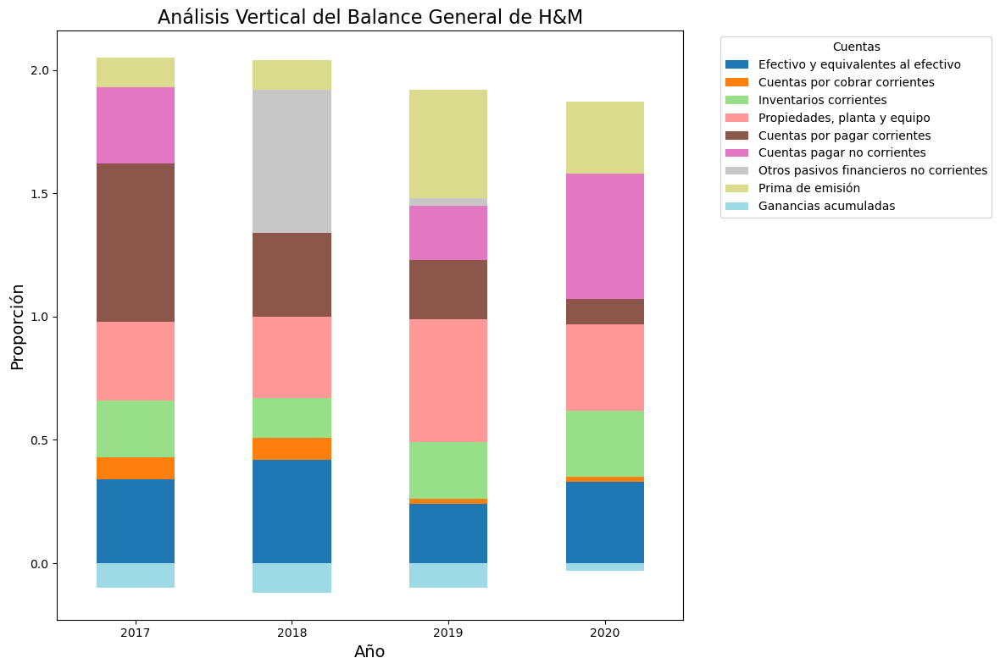
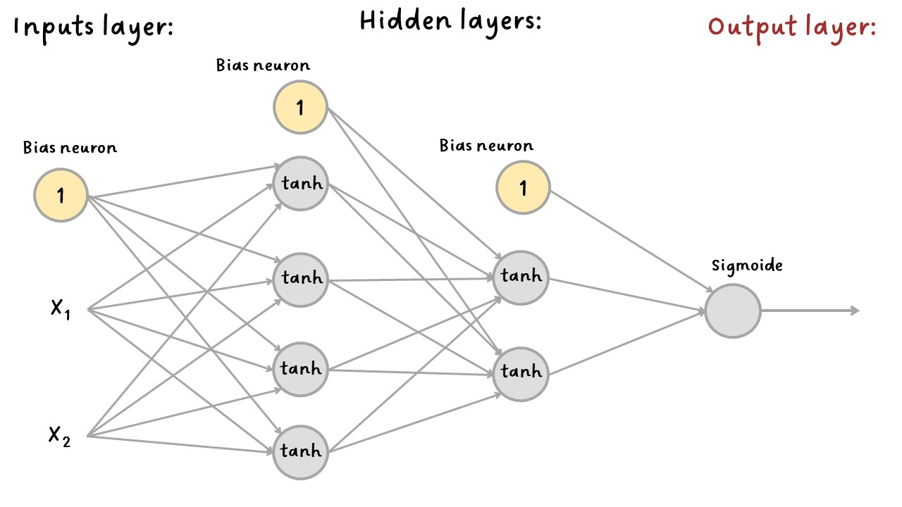
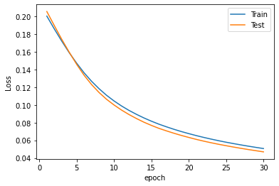
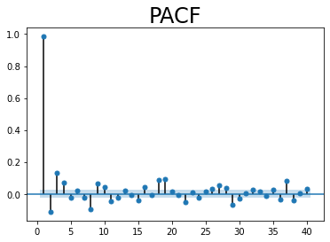
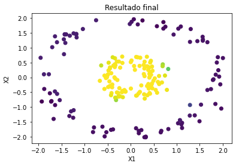
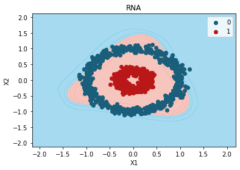

RNA en Keras para clasificación¶
La manera más sencilla de construir una red neuronal artificial es con
el modelo Sequential de Keras, con el cual podemos apilar las capas.
Es básicamente una lista de Python. Cada capa se agrega con el método
add(), que es similar al método append() de una lista de Python.
Después de crear la arquitectura de la RNA con el argumento add() se
realizan los siguientes pasos:
Compilar el modelo:
compile(). Principalmente se especifica la función de costoloss =, el optimizador para el Gradiente Descente conoptimizer =y las métricas adicionales para evaluar el error conmetrics =.Ajuste del modelo:
fit(). Se pasa a la RNA el conjunto de datos para entrenar la red, se especifica la cantidad deepochs =, el tamaño del batch, entre otros.Evaluación del modelo:
evaluate(). Se muestra la métrica de error.Predicción del modelo:
predict(). Es el último paso.
Crearemos una red neuronal capaz de clasificar entre 0 y 1 los siguientes datos.
import numpy as np
import matplotlib.pyplot as plt
from sklearn.datasets import make_circles
X, y = make_circles(n_samples=1000, factor=0.3, noise=0.07, random_state=0)
plt.scatter(X[:, 0], X[:, 1], c=y)
plt.xlabel("X1")
plt.ylabel("X2");

Conjunto de train y test:¶
from sklearn.model_selection import train_test_split
X_train, X_test, y_train, y_test = train_test_split(X, y, test_size=0.2, random_state=0)
X.shape
(1000, 2)
X_train.shape
(800, 2)
y_train.shape
(800,)
Estandarización de las variables:¶
from sklearn.preprocessing import StandardScaler
sc = StandardScaler()
sc.fit(X_train)
X_train = sc.transform(X_train)
X_test = sc.transform(X_test)
X_train[0:5]
array([[-0.44230374, 0.15891901],
[ 0.03728977, 0.68298475],
[ 1.33847 , 1.28640686],
[ 1.80691874, -0.62922478],
[-1.11428973, -1.53859523]])
X_test[0:5]
array([[-0.49240256, 0.09767171],
[ 0.38307799, 0.24735874],
[ 1.7854906 , -0.08927135],
[-0.42479835, -1.7733051 ],
[ 1.66610624, -0.42829004]])

RNAClasificacion1¶
Importar librerías:
Existen muchas maneras de escribir el código, cada una tiene variaciones en la forma de importar los módulos.
Importaremos el modelo Sequential() y las capas layers densas
Dense() así:
from keras.models import Sequential
from keras.layers import Dense
Creación de la arquitectura de la red:¶
Sequential model:
Crearemos un objeto llamado model para almacenar el modelo
Sequential().
A la red neuronal la almacenaremos con el nombre model.
model = Sequential()
Capas densas y funciones de activación:¶
Al modelo Sequential creado llamado model le agregaremos cada capa
con el método add() y como serán capas densas se utiliza
.add(Dense()).
Primera capa densa:
Dentro de la capa Dense() se debe especificar la función de
activación con el argumento activation =. Por defecto es la función
de activación lineal.
Puede ver las funciones de activación de Keras aquí
Funciones de activación de Keras: lineal por defecto, "relu",
"sigmoid", "softmax", "softplus", "softsign",
"tanh", "selu", "elu", "exponential".
La primera capa densa será la primera capa oculta (hidden layer). Esta
capa es la única que está conectada con el input layer, por tanto, a
esta primera capa oculta se le especifica el tamaño del input con el
argumento input_shape = (X.shape[1], ), donde la cantidad de
variables de entrada se especifica con X.shape[1].
Incluir input_shape podría ser opcional, pero recuerde que solo se
aplica en la primera capa oculta, en las demás capas, las entradas serán
las capas de neuronas anteriores y no las variables de entrada.
El siguente ejemplo crea la primera capa oculta con cuatro neuronas y
función de activación tanh.
model.add(Dense(4, activation="tanh", input_shape=(X.shape[1],)))
Cada capa densa gestiona su propia matriz de pesos, que contiene todos los pesos de conexión entre las neuronas y sus entradas. También gestiona un vector de términos de bias (una por neurona).
Segunda capa densa:
Las siguientes capas se crean de forma similar que la primera capa densa
usando los métodos .add(Dense)), pero sin incluir input_shape.
Se creará una capa densa con dos neuronas y función de activación
tanh.
model.add(Dense(2, activation="tanh"))
Capa de salida:
El output layer se crea como cualquier otra capa densa. Recuerde que, dependiendo del problema, esta capa tendrá una o más neuronas y cierta función de activación.
Como este ejemplo es de clasificación binaria solo se necesita una sola neurona con la función de activación Sigmoide.
model.add(Dense(1, activation="sigmoid"))
Summary:
Después de construir el modelo, puede mostrar su contenido a través del
método summary().
model.summary()
Model: "sequential"
_________________________________________________________________
Layer (type) Output Shape Param #
=================================================================
dense (Dense) (None, 4) 12
dense_1 (Dense) (None, 2) 10
dense_2 (Dense) (None, 1) 3
=================================================================
Total params: 25
Trainable params: 25
Non-trainable params: 0
_________________________________________________________________
El método summary() del modelo muestra todas las capas del modelo,
incluido el nombre de cada capa (que se genera automáticamente a menos
que lo establezca al crear la capa), su forma de salida (None
significa que el tamaño del lote puede ser cualquiera) y su número de
parámetros . El summary finaliza con el número total de parámetros,
incluidos los parámetros entrenables y no entrenables. Aquí solo tenemos
parámetros entrenables.
Resumen de la creación de la red:¶
model = Sequential()
model.add(Dense(4, activation="tanh", input_shape=(X.shape[1],)))
model.add(Dense(2, activation="tanh"))
model.add(Dense(1, activation="sigmoid"))
Compilar el modelo:¶
Después de crear la arquitectura de la RNA el modelo se compila con
compile().
loss =: se puede especificar para los problemas de regresiónmseomae. Para clasificación binaria"binary_crossentropy"y para clasificación multiclase"categorical_crossentropy". Si tuvieramos etiquetas donde para cada instancia solo hay una clase, por ejemplo, números del 0 al 9, estas clases son exclusivas, así que utilizaríamos la función de pérdida"sparse_categorical_crossentropy".optimizer =: por defecto usa"rmsprop". Keras tiene las siguientes opciones aquí:"sgd","rmsprop","adam","adadelta","adagrad","adamax","nadam","ftrl". Luego se explicarán los demás métodos de optimización del Gradiente Descente, en este ejemplo utilizaremosoptimizer="sgd"que es el método de gradiente descendente estocástico con tasa de aprendizaje por defecto delr = 0.01.metrics =: para especificar métricas adicionales. La más usada para regresión son"mse"o"mae"si hay presencia de valores atípicos y para clasificación"accuracy", aunque se puede especificar una lista de métricas.
model.compile(loss="binary_crossentropy", optimizer="sgd", metrics=["accuracy"])
Ajuste del modelo:¶
Con fit() se entrena la RNA. Note que en la creación de la
arquitectura y en la compilación no se ha especificado el conjunto de
datos. Esto se hace en este paso.
Se puede especificar la cantidad con epochs = que por defecto es 1.
El tamaño del lote es con batch_size =, por defecto es 32.
verbose = 1 se usa si quiere ver la historia del entramiento, esto
lo imprime en pantalla por cada epoch. De lo contrario, escriba cero
(verbose = 0).
El conjunto de test se pasa a la red con validation_data = (en
realidad es el conjunto de validación porque el conjunto de test se usa
después de la etapa del entrenamiento y optimización de hiperparámetros.
Keras medirá la pérdida y las métricas adicionales en este conjunto al final de cada época, lo que es muy útil para ver qué tan bien funciona realmente el modelo. Si el rendimiento en el conjunto de entrenamiento es mucho mejor que en el conjunto de validación, es probable que su modelo esté sobreajustando el conjunto de entrenamiento (o hay un error, como una discrepancia de datos entre el conjunto de entrenamiento y el conjunto de validación).
En lugar de pasar el conjunto de validación o de test se podría
especificar que del conjunto de entrenamiento utilice un porcentaje para
testear con validation_split=0.20, así utilizará el 20% de los
datos.
model.fit(
X_train,
y_train,
validation_data=(X_test, y_test),
epochs=30,
batch_size=5,
verbose=1,
)
Epoch 1/30
160/160 [==============================] - 1s 2ms/step - loss: 0.6810 - accuracy: 0.6300 - val_loss: 0.6539 - val_accuracy: 0.7000
Epoch 2/30
160/160 [==============================] - 0s 1ms/step - loss: 0.6511 - accuracy: 0.6850 - val_loss: 0.6280 - val_accuracy: 0.6750
Epoch 3/30
160/160 [==============================] - 0s 1ms/step - loss: 0.6295 - accuracy: 0.6687 - val_loss: 0.6079 - val_accuracy: 0.6700
Epoch 4/30
160/160 [==============================] - 0s 1ms/step - loss: 0.6104 - accuracy: 0.7287 - val_loss: 0.5891 - val_accuracy: 0.7900
Epoch 5/30
160/160 [==============================] - 0s 1ms/step - loss: 0.5925 - accuracy: 0.8125 - val_loss: 0.5720 - val_accuracy: 0.8400
Epoch 6/30
160/160 [==============================] - 0s 1ms/step - loss: 0.5752 - accuracy: 0.8400 - val_loss: 0.5552 - val_accuracy: 0.8350
Epoch 7/30
160/160 [==============================] - 0s 1ms/step - loss: 0.5586 - accuracy: 0.8462 - val_loss: 0.5385 - val_accuracy: 0.8400
Epoch 8/30
160/160 [==============================] - 0s 1ms/step - loss: 0.5433 - accuracy: 0.8475 - val_loss: 0.5237 - val_accuracy: 0.8350
Epoch 9/30
160/160 [==============================] - 0s 1ms/step - loss: 0.5288 - accuracy: 0.8500 - val_loss: 0.5098 - val_accuracy: 0.8450
Epoch 10/30
160/160 [==============================] - 0s 1ms/step - loss: 0.5152 - accuracy: 0.8512 - val_loss: 0.4971 - val_accuracy: 0.8550
Epoch 11/30
160/160 [==============================] - 0s 1ms/step - loss: 0.5024 - accuracy: 0.8500 - val_loss: 0.4857 - val_accuracy: 0.8550
Epoch 12/30
160/160 [==============================] - 0s 1ms/step - loss: 0.4908 - accuracy: 0.8525 - val_loss: 0.4743 - val_accuracy: 0.8550
Epoch 13/30
160/160 [==============================] - 0s 1ms/step - loss: 0.4797 - accuracy: 0.8512 - val_loss: 0.4645 - val_accuracy: 0.8600
Epoch 14/30
160/160 [==============================] - 0s 1ms/step - loss: 0.4689 - accuracy: 0.8550 - val_loss: 0.4550 - val_accuracy: 0.8550
Epoch 15/30
160/160 [==============================] - 0s 1ms/step - loss: 0.4584 - accuracy: 0.8600 - val_loss: 0.4453 - val_accuracy: 0.8550
Epoch 16/30
160/160 [==============================] - 0s 1ms/step - loss: 0.4484 - accuracy: 0.8612 - val_loss: 0.4362 - val_accuracy: 0.8550
Epoch 17/30
160/160 [==============================] - 0s 1ms/step - loss: 0.4378 - accuracy: 0.8612 - val_loss: 0.4268 - val_accuracy: 0.8550
Epoch 18/30
160/160 [==============================] - 0s 1ms/step - loss: 0.4270 - accuracy: 0.8650 - val_loss: 0.4178 - val_accuracy: 0.8650
Epoch 19/30
160/160 [==============================] - 0s 1ms/step - loss: 0.4151 - accuracy: 0.8712 - val_loss: 0.4071 - val_accuracy: 0.8750
Epoch 20/30
160/160 [==============================] - 0s 1ms/step - loss: 0.4016 - accuracy: 0.8737 - val_loss: 0.3977 - val_accuracy: 0.8800
Epoch 21/30
160/160 [==============================] - 0s 1ms/step - loss: 0.3868 - accuracy: 0.8900 - val_loss: 0.3811 - val_accuracy: 0.8900
Epoch 22/30
160/160 [==============================] - 0s 1ms/step - loss: 0.3706 - accuracy: 0.8950 - val_loss: 0.3670 - val_accuracy: 0.8950
Epoch 23/30
160/160 [==============================] - 0s 1ms/step - loss: 0.3517 - accuracy: 0.9100 - val_loss: 0.3495 - val_accuracy: 0.8950
Epoch 24/30
160/160 [==============================] - 0s 1ms/step - loss: 0.3315 - accuracy: 0.9200 - val_loss: 0.3318 - val_accuracy: 0.9250
Epoch 25/30
160/160 [==============================] - 0s 1ms/step - loss: 0.3106 - accuracy: 0.9400 - val_loss: 0.3106 - val_accuracy: 0.9350
Epoch 26/30
160/160 [==============================] - 0s 1ms/step - loss: 0.2895 - accuracy: 0.9463 - val_loss: 0.2915 - val_accuracy: 0.9350
Epoch 27/30
160/160 [==============================] - 0s 1ms/step - loss: 0.2691 - accuracy: 0.9525 - val_loss: 0.2727 - val_accuracy: 0.9450
Epoch 28/30
160/160 [==============================] - 0s 1ms/step - loss: 0.2503 - accuracy: 0.9600 - val_loss: 0.2546 - val_accuracy: 0.9450
Epoch 29/30
160/160 [==============================] - 0s 1ms/step - loss: 0.2324 - accuracy: 0.9600 - val_loss: 0.2380 - val_accuracy: 0.9550
Epoch 30/30
160/160 [==============================] - 0s 1ms/step - loss: 0.2158 - accuracy: 0.9638 - val_loss: 0.2218 - val_accuracy: 0.9600
<keras.callbacks.History at 0x2adea518490>
Pesos del modelo entrenado:
Los pesos de la red neuronal entrenada se pueden visualizar con
get_weights().
model.get_weights()
[array([[-0.7902449 , -1.3115454 , 0.22630972, -0.65818053],
[ 0.6853239 , -0.66296613, 1.1980275 , 0.6409905 ]],
dtype=float32),
array([-0.6906886, 1.2303365, 0.9412356, -0.5847251], dtype=float32),
array([[-1.4376062 , -0.5471656 ],
[ 0.63539207, -1.3672541 ],
[-0.63737833, -1.5983989 ],
[-1.3672698 , -0.72069883]], dtype=float32),
array([ 0.4808468, -0.0285115], dtype=float32),
array([[ 2.2300436],
[-2.4322083]], dtype=float32),
array([-2.1681833], dtype=float32)]
Podemos separar los pesos de las capas así:
Pesos de la primera capa oculta:
hidden_1 = model.layers[0]
weights_1, biases_1 = hidden_1.get_weights()
weights_1
array([[-0.7902449 , -1.3115454 , 0.22630972, -0.65818053],
[ 0.6853239 , -0.66296613, 1.1980275 , 0.6409905 ]],
dtype=float32)
biases_1
array([-0.6906886, 1.2303365, 0.9412356, -0.5847251], dtype=float32)
Pesos de la segunda capa oculta:
hidden_2 = model.layers[1]
weights_2, biases_2 = hidden_2.get_weights()
weights_2
array([[-1.4376062 , -0.5471656 ],
[ 0.63539207, -1.3672541 ],
[-0.63737833, -1.5983989 ],
[-1.3672698 , -0.72069883]], dtype=float32)
biases_2
array([ 0.4808468, -0.0285115], dtype=float32)
Pesos de la tercera capa oculta:
hidden_3 = model.layers[2]
weights_3, biases_3 = hidden_3.get_weights()
weights_3
array([[ 2.2300436],
[-2.4322083]], dtype=float32)
biases_3
array([-2.1681833], dtype=float32)
Los anteriores pesos suman 20 que son los Total params: 20 del
model.summary().
Evaluación del modelo:¶
evaluate() muestra las función de pérdida y las métricas
especificadas en compile().
model.evaluate(X_test, y_test)
7/7 [==============================] - 0s 1ms/step - loss: 0.2218 - accuracy: 0.9600
[0.221834197640419, 0.9599999785423279]
Historia del entrenamiento:¶
El modelo se entrena con el método fit() y podemos almacenarlo para
tener toda la historia del entrenamiento, es decir, la evolución del
entrenamiento por cada epoch.
history = model.fit(
X_train,
y_train,
validation_data=(X_test, y_test),
epochs=30,
batch_size=5,
verbose=1,
)
Epoch 1/30
160/160 [==============================] - 0s 1ms/step - loss: 0.2006 - accuracy: 0.9650 - val_loss: 0.2058 - val_accuracy: 0.9600
Epoch 2/30
160/160 [==============================] - 0s 1ms/step - loss: 0.1861 - accuracy: 0.9712 - val_loss: 0.1899 - val_accuracy: 0.9600
Epoch 3/30
160/160 [==============================] - 0s 1ms/step - loss: 0.1723 - accuracy: 0.9762 - val_loss: 0.1743 - val_accuracy: 0.9600
Epoch 4/30
160/160 [==============================] - 0s 1ms/step - loss: 0.1592 - accuracy: 0.9825 - val_loss: 0.1598 - val_accuracy: 0.9650
Epoch 5/30
160/160 [==============================] - 0s 1ms/step - loss: 0.1472 - accuracy: 0.9900 - val_loss: 0.1460 - val_accuracy: 0.9850
Epoch 6/30
160/160 [==============================] - 0s 1ms/step - loss: 0.1363 - accuracy: 0.9950 - val_loss: 0.1335 - val_accuracy: 0.9900
Epoch 7/30
160/160 [==============================] - 0s 1ms/step - loss: 0.1267 - accuracy: 0.9962 - val_loss: 0.1230 - val_accuracy: 1.0000
Epoch 8/30
160/160 [==============================] - 0s 1ms/step - loss: 0.1184 - accuracy: 0.9962 - val_loss: 0.1141 - val_accuracy: 1.0000
Epoch 9/30
160/160 [==============================] - 0s 1ms/step - loss: 0.1109 - accuracy: 0.9987 - val_loss: 0.1064 - val_accuracy: 1.0000
Epoch 10/30
160/160 [==============================] - 0s 1ms/step - loss: 0.1046 - accuracy: 0.9987 - val_loss: 0.1000 - val_accuracy: 1.0000
Epoch 11/30
160/160 [==============================] - 0s 1ms/step - loss: 0.0989 - accuracy: 0.9987 - val_loss: 0.0943 - val_accuracy: 1.0000
Epoch 12/30
160/160 [==============================] - 0s 1ms/step - loss: 0.0939 - accuracy: 1.0000 - val_loss: 0.0892 - val_accuracy: 1.0000
Epoch 13/30
160/160 [==============================] - 0s 1ms/step - loss: 0.0894 - accuracy: 1.0000 - val_loss: 0.0846 - val_accuracy: 1.0000
Epoch 14/30
160/160 [==============================] - 0s 1ms/step - loss: 0.0853 - accuracy: 1.0000 - val_loss: 0.0805 - val_accuracy: 1.0000
Epoch 15/30
160/160 [==============================] - 0s 1ms/step - loss: 0.0817 - accuracy: 0.9987 - val_loss: 0.0769 - val_accuracy: 1.0000
Epoch 16/30
160/160 [==============================] - 0s 1ms/step - loss: 0.0783 - accuracy: 0.9987 - val_loss: 0.0735 - val_accuracy: 1.0000
Epoch 17/30
160/160 [==============================] - 0s 1ms/step - loss: 0.0753 - accuracy: 0.9987 - val_loss: 0.0707 - val_accuracy: 1.0000
Epoch 18/30
160/160 [==============================] - 0s 1ms/step - loss: 0.0725 - accuracy: 1.0000 - val_loss: 0.0680 - val_accuracy: 1.0000
Epoch 19/30
160/160 [==============================] - 0s 1ms/step - loss: 0.0699 - accuracy: 1.0000 - val_loss: 0.0655 - val_accuracy: 1.0000
Epoch 20/30
160/160 [==============================] - 0s 1ms/step - loss: 0.0676 - accuracy: 1.0000 - val_loss: 0.0632 - val_accuracy: 1.0000
Epoch 21/30
160/160 [==============================] - 0s 1ms/step - loss: 0.0653 - accuracy: 0.9987 - val_loss: 0.0611 - val_accuracy: 1.0000
Epoch 22/30
160/160 [==============================] - 0s 1ms/step - loss: 0.0633 - accuracy: 1.0000 - val_loss: 0.0591 - val_accuracy: 1.0000
Epoch 23/30
160/160 [==============================] - 0s 1ms/step - loss: 0.0614 - accuracy: 1.0000 - val_loss: 0.0572 - val_accuracy: 1.0000
Epoch 24/30
160/160 [==============================] - 0s 1ms/step - loss: 0.0595 - accuracy: 1.0000 - val_loss: 0.0555 - val_accuracy: 1.0000
Epoch 25/30
160/160 [==============================] - 0s 1ms/step - loss: 0.0578 - accuracy: 1.0000 - val_loss: 0.0539 - val_accuracy: 1.0000
Epoch 26/30
160/160 [==============================] - 0s 1ms/step - loss: 0.0563 - accuracy: 1.0000 - val_loss: 0.0524 - val_accuracy: 1.0000
Epoch 27/30
160/160 [==============================] - 0s 1ms/step - loss: 0.0548 - accuracy: 1.0000 - val_loss: 0.0509 - val_accuracy: 1.0000
Epoch 28/30
160/160 [==============================] - 0s 1ms/step - loss: 0.0533 - accuracy: 1.0000 - val_loss: 0.0495 - val_accuracy: 1.0000
Epoch 29/30
160/160 [==============================] - 0s 1ms/step - loss: 0.0520 - accuracy: 1.0000 - val_loss: 0.0482 - val_accuracy: 1.0000
Epoch 30/30
160/160 [==============================] - 0s 1ms/step - loss: 0.0507 - accuracy: 1.0000 - val_loss: 0.0469 - val_accuracy: 1.0000
history.params contiene los parámetros de entrenamiento:
history.params
{'verbose': 1, 'epochs': 30, 'steps': 160}
Note la relación entre batch_size, la cantidad de instancia del
conjunto de entrenamiento y de 'steps':. El conjunto de
entrenamiento tiene 800 observaciones, cada batch se especificó con un
tamaño de 5 observaciones, por tanto, 'steps': 160 (800 / 5 = 160).
history.epoch muestra la cantidad de epochs:
history.epoch
[0,
1,
2,
3,
4,
5,
6,
7,
8,
9,
10,
11,
12,
13,
14,
15,
16,
17,
18,
19,
20,
21,
22,
23,
24,
25,
26,
27,
28,
29]
history.history: contiene el resultado de loss y las métricas de
desempeño adicionales que se usaron para medir el resultado al final de
cada epoch sobre el conjunto de entrenamiento y el conjunto de
testing (si este último se especificó).
history.history
{'loss': [0.20064914226531982,
0.18612179160118103,
0.17228195071220398,
0.15919338166713715,
0.14724820852279663,
0.13631734251976013,
0.12674230337142944,
0.1183607280254364,
0.11094741523265839,
0.10455510765314102,
0.09889142960309982,
0.09385880827903748,
0.08940057456493378,
0.08532065153121948,
0.08165186643600464,
0.07828886806964874,
0.07531453669071198,
0.07251229137182236,
0.06992437690496445,
0.06756928563117981,
0.06534776836633682,
0.06327711790800095,
0.06135782599449158,
0.05954119190573692,
0.057831648737192154,
0.05626584589481354,
0.05475471168756485,
0.053328126668930054,
0.051965657621622086,
0.05067552253603935],
'accuracy': [0.9649999737739563,
0.9712499976158142,
0.9762499928474426,
0.9825000166893005,
0.9900000095367432,
0.9950000047683716,
0.9962499737739563,
0.9962499737739563,
0.9987499713897705,
0.9987499713897705,
0.9987499713897705,
1.0,
1.0,
1.0,
0.9987499713897705,
0.9987499713897705,
0.9987499713897705,
1.0,
1.0,
1.0,
0.9987499713897705,
1.0,
1.0,
1.0,
1.0,
1.0,
1.0,
1.0,
1.0,
1.0],
'val_loss': [0.20581863820552826,
0.18991920351982117,
0.17432135343551636,
0.1597510427236557,
0.14595744013786316,
0.13352885842323303,
0.12302403151988983,
0.114051453769207,
0.10641732811927795,
0.09998839348554611,
0.09425605088472366,
0.08917605131864548,
0.0846424549818039,
0.0805053785443306,
0.07686745375394821,
0.073545441031456,
0.07071712613105774,
0.06802648305892944,
0.06553196907043457,
0.06324446201324463,
0.061055220663547516,
0.05905761569738388,
0.0572139173746109,
0.055481404066085815,
0.05388655140995979,
0.05235353857278824,
0.05088932812213898,
0.04950018972158432,
0.04821966961026192,
0.04690530151128769],
'val_accuracy': [0.9599999785423279,
0.9599999785423279,
0.9599999785423279,
0.9649999737739563,
0.9850000143051147,
0.9900000095367432,
1.0,
1.0,
1.0,
1.0,
1.0,
1.0,
1.0,
1.0,
1.0,
1.0,
1.0,
1.0,
1.0,
1.0,
1.0,
1.0,
1.0,
1.0,
1.0,
1.0,
1.0,
1.0,
1.0,
1.0]}
Solo la evolución de la función de pérdida se muestra con:
history.history["loss"]
[0.20064914226531982,
0.18612179160118103,
0.17228195071220398,
0.15919338166713715,
0.14724820852279663,
0.13631734251976013,
0.12674230337142944,
0.1183607280254364,
0.11094741523265839,
0.10455510765314102,
0.09889142960309982,
0.09385880827903748,
0.08940057456493378,
0.08532065153121948,
0.08165186643600464,
0.07828886806964874,
0.07531453669071198,
0.07251229137182236,
0.06992437690496445,
0.06756928563117981,
0.06534776836633682,
0.06327711790800095,
0.06135782599449158,
0.05954119190573692,
0.057831648737192154,
0.05626584589481354,
0.05475471168756485,
0.053328126668930054,
0.051965657621622086,
0.05067552253603935]
history.history["val_loss"]
[0.20581863820552826,
0.18991920351982117,
0.17432135343551636,
0.1597510427236557,
0.14595744013786316,
0.13352885842323303,
0.12302403151988983,
0.114051453769207,
0.10641732811927795,
0.09998839348554611,
0.09425605088472366,
0.08917605131864548,
0.0846424549818039,
0.0805053785443306,
0.07686745375394821,
0.073545441031456,
0.07071712613105774,
0.06802648305892944,
0.06553196907043457,
0.06324446201324463,
0.061055220663547516,
0.05905761569738388,
0.0572139173746109,
0.055481404066085815,
0.05388655140995979,
0.05235353857278824,
0.05088932812213898,
0.04950018972158432,
0.04821966961026192,
0.04690530151128769]
Solo la evolución de la métrica de error se muestra con:
history.history["accuracy"]
[0.9649999737739563,
0.9712499976158142,
0.9762499928474426,
0.9825000166893005,
0.9900000095367432,
0.9950000047683716,
0.9962499737739563,
0.9962499737739563,
0.9987499713897705,
0.9987499713897705,
0.9987499713897705,
1.0,
1.0,
1.0,
0.9987499713897705,
0.9987499713897705,
0.9987499713897705,
1.0,
1.0,
1.0,
0.9987499713897705,
1.0,
1.0,
1.0,
1.0,
1.0,
1.0,
1.0,
1.0,
1.0]
history.history["val_accuracy"]
[0.9599999785423279,
0.9599999785423279,
0.9599999785423279,
0.9649999737739563,
0.9850000143051147,
0.9900000095367432,
1.0,
1.0,
1.0,
1.0,
1.0,
1.0,
1.0,
1.0,
1.0,
1.0,
1.0,
1.0,
1.0,
1.0,
1.0,
1.0,
1.0,
1.0,
1.0,
1.0,
1.0,
1.0,
1.0,
1.0]
Evaluación del desempeño:¶
model.evaluate(X_test, y_test)
7/7 [==============================] - 0s 997us/step - loss: 0.0469 - accuracy: 1.0000
[0.046905308961868286, 1.0]
Gráfico de la función de pérdida por epoch:
Una gráfica que siempre se muestra después de cada entrenamiento es la siguiente. Más adelante se usará para hacer comparaciones entre la evolución con el conjunto de entrenamiento y con el conjunto de test para determinar el overfitting o el underfitting.
import matplotlib.pyplot as plt
plt.plot(range(1, len(history.epoch) + 1), history.history["loss"], label="Train")
plt.plot(range(1, len(history.epoch) + 1), history.history["val_loss"], label="Test")
plt.xlabel("epoch")
plt.ylabel("Loss")
plt.legend();

También podemos hacer un gráfico con las métricas de error.
plt.plot(range(1, len(history.epoch) + 1), history.history["accuracy"], label="Train")
plt.plot(range(1, len(history.epoch) + 1), history.history["val_accuracy"], label="Test")
plt.xlabel("epoch")
plt.ylabel("Loss")
plt.legend();

En caso en que la pérdida en el conjunto de validación (testing) aún siga disminuyendo, es probable que se debiera continuar con el entrenamiento porque el modelo aún no ha convergido del todo.
Si no está satisfecho con el rendimiento de su modelo, debe volver atrás y ajustar los hiperparámetros:
Si el rendimiento aún no es excelente, intente ajustar los hiperparámetros del modelo como:
Cantidad de capas.
Cantidad de neuronas por capa.
Tipos de funciones de activación para cada capa.
Cambiar el tamaño del lote, por defecto en
fit()es de32, pero lo puede cambiar conbatch_size.
Predicción del modelo:¶
Se usa predict() para hacer predicciones sobre cualquier instancia.
Esto se hace después de entrenar el modelo.
En este ejemplo se harán las predicciones sobre los datos de entrenamiento, pero lo más común es ingresar datos nuevos.
Las predicciones las almacenaremos en y_pred
y_pred = model.predict(X_test)
y_pred[0:10]
7/7 [==============================] - 0s 831us/step
array([[0.97525346],
[0.9768917 ],
[0.05209705],
[0.04242007],
[0.05911655],
[0.8323839 ],
[0.01050462],
[0.0600028 ],
[0.9435755 ],
[0.08438432]], dtype=float32)
Como este es un problema de clasificación, el resultado de y_pred es
la probabilidad de pertenecer a la clase de 1.
plt.scatter(X_test[:, 0], X_test[:, 1], c=y_pred)
plt.xlabel("X1")
plt.ylabel("X2")
plt.title("Resultado final");

from matplotlib.colors import ListedColormap
X_Set, y_Set = X, y
X1, X2 = np.meshgrid(
np.arange(start=X_Set[:, 0].min() - 1, stop=X_Set[:, 0].max() + 1, step=0.01),
np.arange(start=X_Set[:, 1].min() - 1, stop=X_Set[:, 1].max() + 1, step=0.01),
)
plt.contourf(
X1,
X2,
model.predict(np.array([X1.ravel(), X2.ravel()]).T).reshape(X1.shape),
alpha=0.75,
cmap=ListedColormap(("skyblue", "#F3B3A9")),
)
plt.xlim(X1.min(), X1.max())
plt.ylim(X2.min(), X2.max())
for i, j in enumerate(np.unique(y_Set)):
plt.scatter(
X_Set[y_Set == j, 0],
X_Set[y_Set == j, 1],
c=ListedColormap(("#195E7A", "#BA1818"))(i),
label=j,
)
plt.title("RNA")
plt.xlabel("X1")
plt.ylabel("X2")
plt.legend()
plt.show()
5777/5777 [==============================] - 5s 802us/step
c argument looks like a single numeric RGB or RGBA sequence, which should be avoided as value-mapping will have precedence in case its length matches with x & y. Please use the color keyword-argument or provide a 2D array with a single row if you intend to specify the same RGB or RGBA value for all points. c argument looks like a single numeric RGB or RGBA sequence, which should be avoided as value-mapping will have precedence in case its length matches with x & y. Please use the color keyword-argument or provide a 2D array with a single row if you intend to specify the same RGB or RGBA value for all points.

y_pred = np.round(y_pred)
y_pred[0:10]
array([[1.],
[1.],
[0.],
[0.],
[0.],
[1.],
[0.],
[0.],
[1.],
[0.]], dtype=float32)
Formas de evaluar el desempeño:¶
Podemos apoyarnos de sklearn para usar las métricas de desempeño una
vez tengamos las predicciones y_pred.
Las métricas de evaluación del desempeño de scikit-learn las puede
ver
aquí
Para este ejemplo de clasificación podemos importar la métrica de
accuracy_score.
Para problemas de regresión se puede importar las métricas de
mean_squared_error y r2_score.
from sklearn.metrics import accuracy_score
accuracy_score(y_test, y_pred)
1.0
El anterior valor es el mismo hallado en evaluate().
Recomendación:¶
import keras
Correr el siguiente código para que el entrenamiento no use datos de la memoria de los entrenamientos anteriores. Usarlo especialmente si implementa los modelos de Keras en un loop.
keras.backend.clear_session()
Guardar y cargar el modelo¶
Los modelos entrenados, es decir, con los pesos optimizados se pueden guardar para luego cargarlos y hacer predicciones.
from keras.models import load_model
model.save("model_training.h5")
my_model = load_model("model_training.h5")
El modelo cargado debe tener la misma cantidad de parámetros que el modelo entrenado.
my_model.summary()
Model: "sequential_1"
_________________________________________________________________
Layer (type) Output Shape Param #
=================================================================
dense_3 (Dense) (None, 4) 12
dense_4 (Dense) (None, 2) 10
dense_5 (Dense) (None, 1) 3
=================================================================
Total params: 25
Trainable params: 25
Non-trainable params: 0
_________________________________________________________________
Los pesos entrenados y guardados son estos:
my_model.get_weights()
[array([[-1.021808 , -1.7277036 , 0.57696456, -0.78262955],
[ 0.61105585, -0.8557676 , 1.5714128 , 0.54705364]],
dtype=float32),
array([-0.7955898 , 1.4017594 , 1.285784 , -0.69864714], dtype=float32),
array([[-1.760383 , -0.2390663 ],
[ 0.8411085 , -1.9778302 ],
[-0.20084894, -2.2020907 ],
[-1.6221673 , -0.5443424 ]], dtype=float32),
array([0.02981644, 0.8002808 ], dtype=float32),
array([[ 3.2374249],
[-3.7132845]], dtype=float32),
array([-2.9383364], dtype=float32)]
Con el model cargado no se hace fit() solo hacemos predicciones.
my_model.predict(X)[0:10]
32/32 [==============================] - 0s 788us/step
array([[0.9790649 ],
[0.98003715],
[0.76289076],
[0.98021734],
[0.9793022 ],
[0.97968346],
[0.32471827],
[0.5022857 ],
[0.61586124],
[0.9795463 ]], dtype=float32)
Resumen del código:¶
from keras.models import Sequential
from keras.layers import Dense
model = Sequential()
model.add(Dense(4, activation="tanh", input_shape=(X.shape[1],)))
model.add(Dense(2, activation="tanh"))
model.add(Dense(1, activation="sigmoid"))
model.compile(loss="binary_crossentropy", optimizer="sgd", metrics=["accuracy"])
history = model.fit(
X_train,
y_train,
validation_data=(X_test, y_test),
epochs=30,
batch_size=5,
verbose=1,
)
Epoch 1/30
160/160 [==============================] - 1s 2ms/step - loss: 0.7167 - accuracy: 0.5462 - val_loss: 0.6633 - val_accuracy: 0.6400
Epoch 2/30
160/160 [==============================] - 0s 1ms/step - loss: 0.6622 - accuracy: 0.6450 - val_loss: 0.6306 - val_accuracy: 0.7150
Epoch 3/30
160/160 [==============================] - 0s 1ms/step - loss: 0.6330 - accuracy: 0.6963 - val_loss: 0.6092 - val_accuracy: 0.7400
Epoch 4/30
160/160 [==============================] - 0s 1ms/step - loss: 0.6117 - accuracy: 0.7362 - val_loss: 0.5920 - val_accuracy: 0.7550
Epoch 5/30
160/160 [==============================] - 0s 1ms/step - loss: 0.5928 - accuracy: 0.7538 - val_loss: 0.5758 - val_accuracy: 0.7700
Epoch 6/30
160/160 [==============================] - 0s 1ms/step - loss: 0.5744 - accuracy: 0.7812 - val_loss: 0.5559 - val_accuracy: 0.7850
Epoch 7/30
160/160 [==============================] - 0s 1ms/step - loss: 0.5557 - accuracy: 0.7812 - val_loss: 0.5373 - val_accuracy: 0.8050
Epoch 8/30
160/160 [==============================] - 0s 1ms/step - loss: 0.5352 - accuracy: 0.7975 - val_loss: 0.5157 - val_accuracy: 0.8150
Epoch 9/30
160/160 [==============================] - 0s 1ms/step - loss: 0.5126 - accuracy: 0.8163 - val_loss: 0.4916 - val_accuracy: 0.8400
Epoch 10/30
160/160 [==============================] - 0s 1ms/step - loss: 0.4876 - accuracy: 0.8313 - val_loss: 0.4644 - val_accuracy: 0.8500
Epoch 11/30
160/160 [==============================] - 0s 1ms/step - loss: 0.4597 - accuracy: 0.8375 - val_loss: 0.4358 - val_accuracy: 0.8750
Epoch 12/30
160/160 [==============================] - 0s 1ms/step - loss: 0.4295 - accuracy: 0.8525 - val_loss: 0.4025 - val_accuracy: 0.8750
Epoch 13/30
160/160 [==============================] - 0s 1ms/step - loss: 0.3970 - accuracy: 0.8637 - val_loss: 0.3682 - val_accuracy: 0.8950
Epoch 14/30
160/160 [==============================] - 0s 1ms/step - loss: 0.3635 - accuracy: 0.9087 - val_loss: 0.3350 - val_accuracy: 0.9750
Epoch 15/30
160/160 [==============================] - 0s 1ms/step - loss: 0.3309 - accuracy: 0.9737 - val_loss: 0.3043 - val_accuracy: 1.0000
Epoch 16/30
160/160 [==============================] - 0s 1ms/step - loss: 0.3006 - accuracy: 1.0000 - val_loss: 0.2742 - val_accuracy: 1.0000
Epoch 17/30
160/160 [==============================] - 0s 1ms/step - loss: 0.2734 - accuracy: 1.0000 - val_loss: 0.2482 - val_accuracy: 1.0000
Epoch 18/30
160/160 [==============================] - 0s 1ms/step - loss: 0.2489 - accuracy: 1.0000 - val_loss: 0.2249 - val_accuracy: 1.0000
Epoch 19/30
160/160 [==============================] - 0s 1ms/step - loss: 0.2276 - accuracy: 1.0000 - val_loss: 0.2058 - val_accuracy: 1.0000
Epoch 20/30
160/160 [==============================] - 0s 1ms/step - loss: 0.2087 - accuracy: 1.0000 - val_loss: 0.1885 - val_accuracy: 1.0000
Epoch 21/30
160/160 [==============================] - 0s 1ms/step - loss: 0.1921 - accuracy: 1.0000 - val_loss: 0.1738 - val_accuracy: 1.0000
Epoch 22/30
160/160 [==============================] - 0s 1ms/step - loss: 0.1774 - accuracy: 1.0000 - val_loss: 0.1607 - val_accuracy: 1.0000
Epoch 23/30
160/160 [==============================] - 0s 1ms/step - loss: 0.1644 - accuracy: 1.0000 - val_loss: 0.1489 - val_accuracy: 1.0000
Epoch 24/30
160/160 [==============================] - 0s 1ms/step - loss: 0.1528 - accuracy: 1.0000 - val_loss: 0.1386 - val_accuracy: 1.0000
Epoch 25/30
160/160 [==============================] - 0s 1ms/step - loss: 0.1425 - accuracy: 1.0000 - val_loss: 0.1287 - val_accuracy: 1.0000
Epoch 26/30
160/160 [==============================] - 0s 1ms/step - loss: 0.1333 - accuracy: 1.0000 - val_loss: 0.1208 - val_accuracy: 1.0000
Epoch 27/30
160/160 [==============================] - 0s 1ms/step - loss: 0.1249 - accuracy: 1.0000 - val_loss: 0.1138 - val_accuracy: 1.0000
Epoch 28/30
160/160 [==============================] - 0s 1ms/step - loss: 0.1176 - accuracy: 1.0000 - val_loss: 0.1065 - val_accuracy: 1.0000
Epoch 29/30
160/160 [==============================] - 0s 1ms/step - loss: 0.1109 - accuracy: 1.0000 - val_loss: 0.1005 - val_accuracy: 1.0000
Epoch 30/30
160/160 [==============================] - 0s 1ms/step - loss: 0.1047 - accuracy: 1.0000 - val_loss: 0.0949 - val_accuracy: 1.0000
¿Cómo cambia el resultado si no hace el escalado de variables?